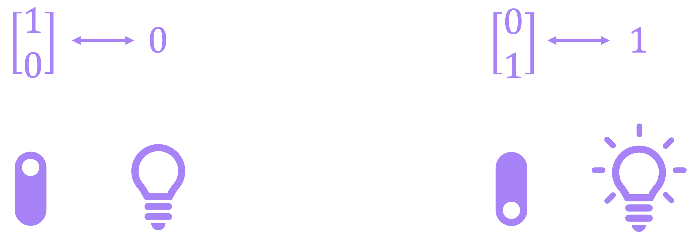
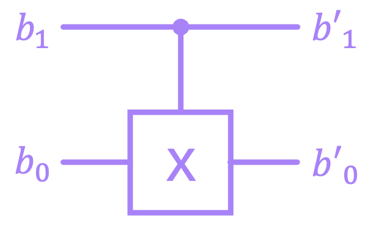
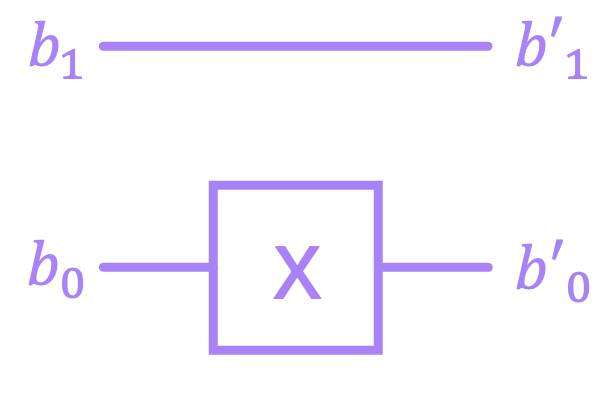
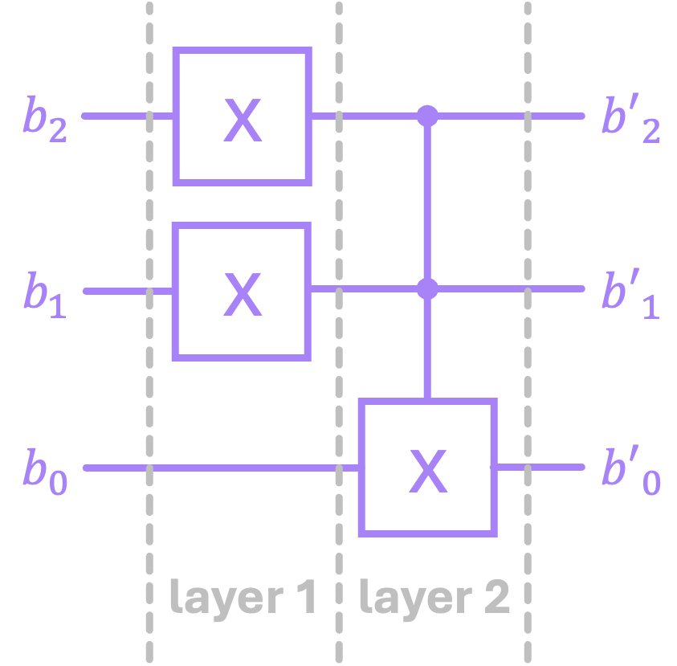
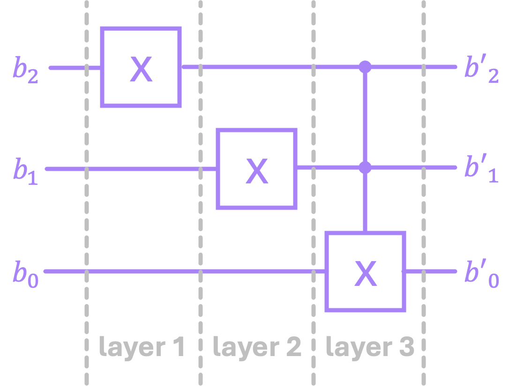
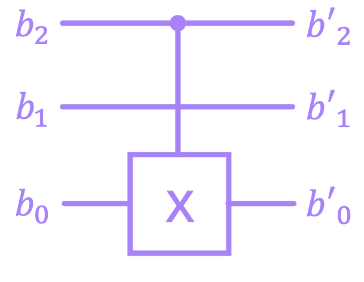

Linear Algebra for Reversible Circuits#
An extremely attractive feature of reversible logic is that it maps very naturally to using vectors to represent boolean values (inputs/outputs), and matrices to express operations (gates and circuits). With very little extra work, reversible circuits can be turned into simple linear algebra relations, where multiplying an input vector by a circuit matrix gives us the corresponding output.
1. Single-Bit Systems#
1.1 Single-Bit Numbers as Vectors#
The first step to transition to a linear algebra representation is to redefine our fundamental unit of information (the bit) as a column vector. We do this by assigning to the two possible values the bit can take (\(0\) or \(1\)) the following representations:
At first glance, this might look silly. Having a vector with two separate elements to represent a single bit seems rather redundant, but the many reasons for doing this will become evident as we progress throughout the next few chapters. In particular, we will soon see that this vector representation is a very convenient way to express the likelihood of finding a bit to be either \(0\) or \(1\) when we don’t have full knowledge of how our circuits are behaving in the presence of uncertainty.
An easy way to remember this notation is to think of the \(1\) inside the vectors as the position of a light switch. Having a \(1\) on the top position of the vector can be seen as a switch flipped upwards, which keeps a light bulb OFF (Boolean \(0\)). Similarly, a \(1\) in the bottom of the vector represents the light switch being flipped down, which turns the light bulb ON (Boolean \(1\)):
{kind=link}
Now, even though there is nothing stopping us from using arrows on top of \(0\) and \(1\) to emphasize that they are vectors, this notation is quite unusual. Instead, we will now introduce a new way to express vectors by using what is known as bra-ket or Dirac notation:
Here, the symbol \(| \, \cdot \, \rangle\) is known as a “ket”. For the time being, a ket is simply a representation for a vector in the same way that placing a hat or arrow on top of a variable is; for example, writing \(| b \rangle\) is equivalent to \(\vec{b}\). Later we will see that kets are typically reserved for specific vectors that belong to a certain type vector space that has some nice properties, but the good thing is that the vectors we will work with in this chapter are a subset of this “family”.
We have therefore upgraded our definition of the bit from being a binary number \(b \in \{0, 1\}\), to a column vector of the form:
where each element \(\beta_j \in \{0, 1\}\). The values of \(\beta_0\) and \(\beta_1\) must also meet the condition that they can’t simultaneously be \(0\) or \(1\).
A slightly more formal way to formulate this restriction (which will be helpful when we introduce quantum bits) is to say that the magnitude of our vector \(| b \rangle\) should always be equal to \(1\):
The definition of vector magnitude we will use (for the moment) is the same we’re accustomed to for vectors in geometry. That is, if we have a real-valued vector \(\vec{x} = \begin{bmatrix} x_0 \\ x_1 \end{bmatrix}\), its magnitude is given by the Euclidean norm:
Enforcing the condition \( \|b\| = 1 \) guarantees that vectors like \(\begin{bmatrix} 0 \\ 0 \end{bmatrix}\) and \(\begin{bmatrix} 1 \\ 1 \end{bmatrix}\) are not valid representations of \(|b\rangle\) because, even though they have \(\beta_j \in \{0, 1\}\), their magnitudes are \(0\) and \(\sqrt{2}\), respectively. Therefore, our complete definition for the vector representation of a bit is given by:
Let’s go ahead and create some of these vectors in Numpy and find their magnitude to start getting familiarized with how to manipulate arrays. We will also use Sympy to display them nicely:
import numpy as np
import sympy as sp
# Define |0⟩
ket_0 = np.array([[1],
[0]])
print(ket_0)
[[1]
[0]]
# We can use SymPy to render our vectors in LaTeX
sp.Matrix(ket_0)
# Define |1⟩
ket_1 = np.array([[0],
[1]])
sp.Matrix(ket_1)
# Find magnitude of vector using numpy's functions.
# 1) square each term, 2) sum vector terms, 3) take square root:
mag_0 = np.sqrt(np.sum(ket_0**2))
mag_1 = np.sqrt(np.sum(ket_1**2))
print(f'magnitude of |0⟩: {mag_0}')
print(f'magnitude of |1⟩: {mag_1}')
magnitude of |0⟩: 1.0
magnitude of |1⟩: 1.0
# Define invalid vectors
ket_null = np.array([[0],
[0]])
ket_full = np.array([[1],
[1]])
# Find magnitude of vectors
mag_null = np.sqrt(np.sum(ket_null**2))
mag_full = np.sqrt(np.sum(ket_full**2))
print(f'magnitude of vector with two 0s: {mag_null}')
print(f'magnitude of vector with two 1s: {mag_full}')
magnitude of vector with two 0s: 0.0
magnitude of vector with two 1s: 1.4142135623730951
Now, in linear algebra, it is also fairly common to express the magnitude of a vector as a function of the dot product, which is defined as:
Here, the symbol \(^\top\) denotes the transpose of a vector:
We can then find the dot product by using the product of vectors:
which, by definition results in:
Now, to find the magnitude of a vector \(\vec{x}\), we can take the dot product of the vector with itself:
which is the same expression we had previously defined for the magnitude. In the case of column vectors expressed in the ket notation \(|b\rangle\), their row vector counterparts are important enough that they also get their own label:
We call the symbol \( \langle \, \cdot \, | \) a “bra”, and again, for the time being, it simply corresponds to the transpose of its corresponding ket. This is because \(\beta_j\) can only take binary values, but we will need to slightly update this definition when dealing with quantum states.
We can then combine a bra and a ket (into a bracket) to compute the magnitude of a vector:
which, as we said, must be equal to \(1\) to represent valid values of \(|b\rangle\) (technically, it’s square-root must be \(1\), but since \(\sqrt{1} = 1\), the condition \(\langle b | b \rangle = 1\) is equally valid).
Just like with the dot product, we can use this bra-ket combination to find the overlap between two vectors. For example:
which makes perfect sense since \(|0\rangle\) and \(|1\rangle\) are orthogonal to each other.
In Numpy, we can perform the dot product between vectors using the numpy.vdot() function:
# Calculate dot products between combinations of |0⟩ and |1⟩
dot_prods = [np.vdot(ket_0, ket_0),
np.vdot(ket_0, ket_1),
np.vdot(ket_1, ket_0),
np.vdot(ket_1, ket_1)]
for i in ['00', '01', '10', '11']:
print(f'The dot product between |{i[0]}⟩ and |{i[1]}⟩ is {dot_prods[int(i,2)]}')
The dot product between |0⟩ and |0⟩ is 1
The dot product between |0⟩ and |1⟩ is 0
The dot product between |1⟩ and |0⟩ is 0
The dot product between |1⟩ and |1⟩ is 1
Let’s now look at how reversible logic gates can be modeled within the framework of linear algebra.
1.2 Single-Bit Gates as Matrices#
Our next step is to figure out how to map logic gates to matrices. As discussed in the previous chapter, in the case of a single bit, the only reversible gate we have available is the \(\text{X}\) gate, which should change a \(|0\rangle\) to a \(|1\rangle\), and vice versa:
which in vector notation is equivalent to:
The matrix \(\text{X}\) that produces this “mapping” is given by:
We can verify this by remembering how matrix multiplication works. If we have a general vector \(\vec{x} = \begin{bmatrix} x_0 \\ x_1 \end{bmatrix}\), and multiply it with a matrix \(A = \begin{bmatrix} a_{00} & a_{01} \\ a_{10} & a_{11} \end{bmatrix}\) to get the vector \(\vec{y} = \begin{bmatrix} y_0 \\ y_1 \end{bmatrix}\), we need to perform the following operation:
In essence, the elements of the resulting vector \(\vec{y}\) are calculated by taking the dot product between each of the rows of \(A\) with the column vector \(\vec{x}\).
Let’s now replace \(A\) with \(\text{X}\), and \(\vec{x}\) with \(|0\rangle\):
which checks out. The same procedure can be followed to show \(|0\rangle = \text{X}|1\rangle\), but let’s go ahead and actually use NumPy to perform these calculations for us:
# Define X matrix
X = np.array([[0,1],
[1,0]])
sp.Matrix(X)
Now, to perform matrix multiplication as defined above, we should use the numpy.matmul() function. However, we can also use the syntactic-sugar symbol @ as shortcut to perform the same operation\(^*\):
# Multiply |0⟩ by X to get |1⟩:
ket_1 = X @ ket_0
sp.Matrix(ket_1)
# Multiply |1⟩ by X to recover |0⟩:
sp.Matrix(X @ ket_1)
As can be seen, multiplying \(\text{X}\) by \(|1\rangle\) does indeed produce \(|0\rangle\). However, at this point, I have to confess that I have been lying, but just a little bit. So far, I have stated that in order to recover our original value after applying the \(\text{X}\) gate once we must reapply \(\text{X}\) again. And although this is in fact true, it is not “formally” correct. The right thing to do when we want to “reverse” the effect of a given gate is to apply the inverse of its corresponding matrix.
The reason for this is that, if we have a general matrix \(A\) acting on a vector \(\vec{x}\), and we want to apply a matrix \(B\) such that we recover \(x\), then \(B \, A\) must be equal to a matrix \(I\) that leaves the vector \(\vec{x}\) (or any matrix in acts on) unchanged:
The matrix \(I\) is called the identity matrix. From the expression above it is implied that:
and since \(I\) leaves elements unchanged:
So we have uncovered a very important property of the matrices that represent reversible gates/circuits: they must be invertible. And it the case of the matrix \(\text{X}\), it turns out that \(\text{X}\) is its own inverse:
This is why we can simply say that applying \(\text{X}\) a second time reverses its effect. For the moment, we won’t go into the details of how to compute the inverse of the matrices we’re working with because we need to introduce a few more of their properties, so for now, let’s confirm that the relationship above is in fact true by using NumPy’s inverse function:
# Find X⁻¹ to verify it is equal to X:
X_inv = np.linalg.inv(X)
sp.Matrix(X_inv)
An equivalent way to confirm this is simply showing \(I = X X\), where the identity matrix is given by:
I = X @ X
sp.Matrix(I)
Let’s now generalize these concepts for when we are dealing with more than one bit.
2. Multi-Bit Systems#
2.1 Multi-Bit Numbers as Vectors#
In previous chapters, we expressed an arbitrary binary number \(b\) as:
where the \(i^{\text{th}}\) bit \(b_i \in \{0, 1\}\) (this is often denoted as \(b \in \{0, 1\}^n\)). Now, in order to expand our vector representation of a single bit to multiple bits, we need to introduce the Kronecker product. In general, the Kronecker product is a matrix operation, but we will first introduce it for the simplest case: vectors of dimension 2. If we have two vectors \(\vec{x} = \begin{bmatrix} x_0 \\ x_1 \end{bmatrix}\) and \(\vec{y} = \begin{bmatrix} y_0 \\ y_1 \end{bmatrix}\), their Kronecker product (denoted by the symbol \(\otimes\)) is given by:
To put it into words, the Kronecker product is performed by taking each of the elements of vector \(\vec{x}\), and multiplying them by each of the values of vector \(\vec{y}\). This will result in a single column vector \(\vec{z}\) with dimensions equal to the sum of the dimensions of \(\vec{x}\) and \(\vec{y}\). In this case, since both vectors have \(2\) dimensions, \(\vec{z}\) is of dimension \(4\).
So let us take, for example, the two-bit binary number \(b = 10\). In vector representation this will be given by:
A general rule is that, when dealing with binary numbers, we will always find a \(1\) in the vector index corresponding to the decimal value of that number, and \(0\)s everywhere else. For instance, in the example above, the binary number \(10\), which is \(2\) in decimal, resulted in a vector with a \(1\) in its second element. Keep in mind that here we are indexing the vector starting form the \(0^{\text{th}}\) element, and increasing the index value from top to bottom. Moreover, the Kronecker product preserves the property that the magnitude of our vector is still equal to \(1\).
It is also common notation to place the binary value of \(b\) inside a ket to denote its corresponding vector. For example for \(b = 101\), we would write: \(|b\rangle = |101 \rangle \), which corresponds to the vector:
So, in general, to represent an \(n\)-bit binary value in vector representation we perform the Kronecker product of the vector representation of each of its bits:
where \(|b_{i}\rangle\) is either \(|0\rangle\) or \(|1\rangle\). This expression can also be compactly written as:
And, since each \(|b_{i}\rangle\) is of dimension \(2\), the dimension of vector \(|b\rangle\) will be \(N = 2^n\), which can be written as:
where only one of all \(\beta_j\) is equal to \(1\), and the rest are equal to \(0\). More formally:
An important aspect of these \(n\)-bit vectors is that they are all orthogonal to each other. What we mean by this is that, the dot product between any two different \(n\)-bit vectors is always \(0\):
for \(a, b \in \{0,1 \}^n .\) This is an important property because, just like the single-bit vectors \(|0\rangle\), \(|1\rangle\), the \(n\)-bit vectors form a basis. And later, we will construct quantum states as linear combinations of these basis vectors, just like we can use the unit vectors \(( \hat{\imath}, \hat{\jmath}, \hat{\kappa})\) to construct any other vector in a 3-dimensional space.
Let’s now try a few examples using Python to verify that we do in fact get always get a \(1\) at the index corresponding to the value of \(b\). In NumPy, we perform the Kronecker product using the numpy.kron() function. So, for the binary number \(10\), we should get a vector with a \(1\) in second element, and zeros everywhere else (and remember, we start indexing from zero):
# ket_1 and ket_1 where defined above
b = np.kron(ket_1, ket_0)
sp.Matrix(b)
For larger binary numbers, we can iterate over its bits to perform the Kronecker product of the vector representation of each of them. Let’s create a function to do this:
def bin_to_vec(b):
# define |0⟩ and |1⟩ within the function:
ket_0 = np.array([[1],[0]])
ket_1 = np.array([[0],[1]])
b_inv = b[::-1] # Reverse order of b. Like matrix mult,
# Kronecker prod is performed from right to left.
# iterate over bits
for i, bit in enumerate(b_inv):
if bit == '0':
b_i = ket_0
else:
b_i = ket_1
# for first bit, we don't perform the product
if i == 0:
ket_b = b_i
else:
ket_b = np.kron(b_i,ket_b)
return ket_b
Now lets convert number \(5\) (\(101\) in binary) to a vector. Because this number has 3 bits, we should get a vector of dimension \(2^3 = 8\) with a \(1\) in the fifth element:
b = '101' # 5 in decimal
b_vec = bin_to_vec(b)
sp.Matrix(b_vec)
For larger numbers, where the vectors become quite long, we can use numpy.where() function to verify that we get a one in the index of the value we are converting:
b = '10110' # 22 in decimal
b_int = int(b,2)
bits = len(b)
print(f'Number {b_int} in binary ({b}) has {bits} bits')
print(f'This should result in a vector of dimension {2**bits}, with a \'1\' in index {b_int}')
Number 22 in binary (10110) has 5 bits
This should result in a vector of dimension 32, with a '1' in index 22
b_vec = bin_to_vec(b) # Construct vector using bin_to_vec function
b_vec_len = len(b_vec) # Find length of vector
b_vec_one = np.where(b_vec == 1)[0][0] # Find position in vector where entry is equal to 1
print(f'The dimension of the constructed vector is {len(b_vec)}')
print(f'There is a \'1\' in position {b_vec_one} of this vector')
The dimension of the constructed vector is 32
There is a '1' in position 22 of this vector
In summary, we can find the vector representation of a binary number by taking the Kronecker product of the vector representation of its individual bits. The dimension of the resulting vector will be \(2^n\) because each bit is expressed by vector of dimension 2, and the Kronecker product produces vectors of dimension equal to the sum of the individual vectors. Additional, the Kronecker product preserves the magnitude of the vector (always equal to \(1\)), so we end up with a vector with \(0\)s in every position except in the index equal to the decimal value of the binary number, in which we get a \(1\).
2.2 Multi-Bit Gates (and Circuits) as Matrices#
The next and final step of this chapter is to figure out how to represent multi-bit gates and full circuits as matrices. Let’s start by looking at the \(\text{CX}\) gate we introduced in the previous chapter:
{kind=link}
which has the following truth table:
\(b_1\) |
\(b_0\) |
\(b_1'\) |
\(b_0'\) |
|---|---|---|---|
\(0\) |
\(0\) |
\(0\) |
\(0\) |
\(0\) |
\(1\) |
\(0\) |
\(1\) |
\(1\) |
\(0\) |
\(1\) |
\(1\) |
\(1\) |
\(1\) |
\(1\) |
\(0\) |
Another way to write this table is by specifying the input to output relations we get when we apply this gate:
If we are to treat our binary values as vectors, then the \(\text{CX}\) matrix must have the same number of columns as the dimension of the input vector, and the same number of rows as the output vector. In this case, both input and output have two bits, which makes their vectors of dimension 4. This means \(\text{CX}\) must be a \(4 \times 4\) matrix.
Let us now make \(\text{CX}\) a general matrix with elements \(c_{ij}\), and write down the first of these relations in vector form:
When multiplying \(\text{CX}\) with the input vector, we will get a column vector with elements equal to the first row of \(\text{CX}\):
For these two expressions to match, we then need to satisfy \(c_{00} = 1\) and \(c_{01} = c_{02} = c_{03} = 0\). We can repeat this process for the remaining 3 expressions, and find all the coefficients of the \(\text{CX}\) matrix, which then results in:
And the exact same procedure can be followed to find the matrix for the 3-bit \(\text{CCX}\) (Toffoli) gate:
But more generally, since gates of reversible circuits always map from input to output vectors of the same length, these matrices are always square matrices of dimension \(2^n \times 2^n\), with \(n\) being the number of bits. Furthermore, because input and output vectors should represent valid vectors of magnitude \(1\), gate matrices should be such that they preserve the magnitude of vectors.
Lastly, we need to specify how to compose the matrices of larger systems. For example, let’s consider the case in which we have a circuit with two bits, where we apply an \(\text{X}\) on the bottom bit, but leave the top bit alone:
{kind=link}
The way we construct the matrix \(Q\) for this circuit, is by taking the Kronecker product of an identity matrix (because the vector of the top bit must remain unchanged) and the \(\text{X}\) gate:
The Kronecker product for matrices works in a very similar way to that of vectors. For the example above:
And again, we can verify this using Numpy:
Q = np.kron(I, X)
sp.Matrix(Q)
In general, we can construct the matrix for an \(n\)-bit system by performing the Kronecker product between the individual matrices acting on each of the bits:
where, in this case, each \(Q_i\) corresponds to a \(2 \times 2\) matrix.
For larger circuits where we have several series of gates in each bit line, we can align gates from different bits into “layers”. For example:
{kind=link}
We can then compute the Kronecker product of the gates within a given layer, followed by the matrix multiplication of the resulting matrices of the different layers. In the example above, for the fist layer we would have:
And since the second layer \(Q_2\) has only a \(\text{CCX}\), we would compute the total unitary as:
Notice how the order in which we perform the matrix multiplication is reverse to that of how the gates get applied in the circuit. That is because inputs to circuits reside on the left, and outputs are on the right. But matrix multiplication occurs from right to left. What we mean by this is that, if our input to our circuit is the vector \(|b\rangle_{in}\), from the circuit we see that \(O_1\) gets applied first followed by \(Q_2\). But to calculate the output vector we would do:
because \(Q_1\) should operate on the input first before \(Q_2\) multiplies that result. Since computing \(Q\) is a long calculation, let’s use Numpy to do this for us:
# Generate CCX matrix
CCX = np.eye(8, dtype=int)
CCX[6,6], CCX[7,7], CCX[6,7], CCX[7,6] = (0,0,1,1)
sp.Matrix(CCX)
# Compute circuit matrix
Q_1 = np.kron(X, np.kron(X, I))
Q_2 = CCX
Q = Q_2 @ Q_1
sp.Matrix(Q)
It is also worth noting that the “layering” we selected above is rather arbitrary. We could have chosen a different way to perform the operations, but this will lead to the same result. For we could have selected to organize the circuit with three layers:
{kind=link}
We would then compute its matrix as:
And to verify we do in fact get the same result, we can again use Numpy:
Q_1 = np.kron(X, np.kron(I, I))
Q_2 = np.kron(I, np.kron(X, I))
Q_3 = CCX
Q = Q_3 @ Q_2 @ Q_1
sp.Matrix(Q)
One important aspect of constructing larger matrices that describe circuits by taking the Kronecker product of magnitude-preserving matrices (such the matrices that describe reversible gates), is that the final matrix will also preserve the magnitude of the input vector. Therefore, we have uncovered three important properties of the matrices that describe reversible circuits:
They are square
They are invertible
They preserve the magnitude of the vectors they operate on
One more characteristic we’ve seen from these matrices is that all of their entries are \(0\) or \(1\). However, this will soon change when we introduce the concept of probabilistic circuits in the next chapter.
Lastly, I want to discuss an important exception to constructing larger matrices by using the Kronecker product as described above. An issue arises when we have idle bits in between multi-bit operations. For example, consider the following 3-bit circuit where we have a \(\text{CX}\) between the top and bottom bits:
{kind=link}
Notice that because the idle bit is in between the \(\text{CX}\) gate (not below or above it), the operations \((I \otimes \text{CX})\) and \((\text{CX} \otimes I)\) will not produce the right matrix. An intuitive way to construct this matrix would be to follow the same procedure we used before where we write down the input to output mappings for every state:
and then find all the coefficients of the matrix \(Q\). However, this is not a very practical procedure when we have several of such gates and very large circuits. We want to be able to compute (or rather have Numpy compute) all final matrices using only Kronecker products and matrix multiplication. The issue here is that the \(\text{CX}\) cannot be express as the Kronecker product of two separate matrices (try it! you really can’t). However, it is possible to express it as the sum of Kronecker products:
We will not discuss how we arrived at this decomposition right now. All we need to know is that this is possible and therefore, we can construct the matrix \(Q\) by “sliding in” the identity of the idle bit in between the Kronecker products of the sum above:
Let’s now use Numpy to verify that this decomposition of the \(\text{CX}\) gate works, and the find the matrix \(Q\):
# Verify CX gate decomposition
Π0 = np.array([[1,0],
[0,0]])
Π1 = np.array([[0,0],
[0,1]])
CX = np.kron(Π0,I) + np.kron(Π1,X)
sp.Matrix(CX)
# Compute Q for our circuit
Q = np.kron(Π0,np.kron(I,I)) + np.kron(Π1,np.kron(I,X))
sp.Matrix(Q)
We can check if this matrix is indeed working correctly by passing the input \(100\), which should result in an output of \(101\). Remember, if the control bit is \(1\), then the target bit gets inverted. The bit in the middle, which is the idle bit, remains unchanged:
# vector representation of input 100 (4 in decimal),
# should be a column vector with a 1 in the 4th element
b_in = bin_to_vec('100')
sp.Matrix(b_in)
# expected output is 101 (5 in decimal),
# so we should get a vector with a 1 in the 5th element.
b_out = Q @ b_in
sp.Matrix(b_out)
Try out changing the input value to different numbers to verify that our circuit does indeed work as expected.
Now that we have established some of the linear algebra concepts needed to deal with reversible circuits, we can move on to the next chapter to introduce a critical concept required to understand quantum computing: randomness and probability.
Footnotes#
\(^*\)If you are not accustomed to using NumPy, here’s a VERY important thing to keep in mind. The multiplication symbol * does NOT perform convetional matrix multiplication of NumPy arrays. Instead, it performs element-wise multiplication (aka, the Hadamard Product). For matrix multiplication, we must use the @ symbol. (go back)